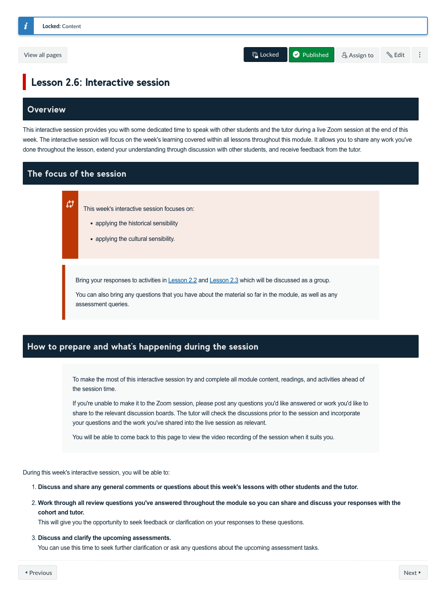
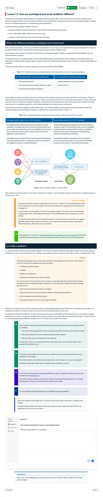

Course Description
This course seeks to develop understanding of the social foundations of health and the ways in which frameworks and theories can be used to guide thought and action to improve health. The course draws out the historical, cultural and structural dimensions of contemporary health problems, using the framework of the sociological imagination. Students will explore the social determinants of Indigenous health. Finally, the course will consider social and behaviour change, from both theoretical and practical perspectives. Students will develop their critical thinking and analytical skills to understand conversations around health and health outcomes.
Learning Outcomes
- Analyse health narratives using the sociological imagination framework.
- Demonstrate a critical understanding of the historical positioning of Indigenous people in Australian society.
- Demonstrate a critical understanding of the key social and cultural determinants affecting the health of Indigenous people in Australia.
- Apply social and cultural determinants of health frameworks to Indigenous health contexts.
- Apply and critique theoretical and practical approaches to social and behavioural change in contemporary health contexts.
Learning Experience
Topics
- Introduction to Sociology
- Historical & Cultural Impacts on Health
- Structural & Critical Impacts on Health
- Language
- Behaviour Change
- Media & Social Marketing
- Policy, Law & Legislation
- Community & Social Movements
- Historical Context of Australian Indigenous Health
- Social & Cultural Determinants of Indigenous Health
- Addressing the Social & Cultural Determinants of Indigenous Health
- Communication
Development Team
-

Shona Crabb
Course Author
Lead
-

Dylan Coleman
Course Author
Lead
-

Andrew Gardner
Course Author
Collaborator
-

Brianna Morello
Course Author
-
Kat Alchin
Learning Designer
Lead
-
Alexis Milligan
Digital Education Developer
Lead
Assessments
-
Course Reflection
Learning Journal
Learners develop their self-reflection and self-awareness skills by writing three short reflections in relation to the content covered in the course.
10%
-
Sociological Imagination Essay
Essay
In this task learners apply a sociological analysis to a contemporary health issue, using the framework of the sociological imagination.
30%
-
Health campaign analysis
Media Task
Learners create a video presentation providing an overview and critique of a social marketing campaign that attempts to create behaviours and social change to demonstrate their understanding of behaviour change models and how they are applied in contemporary health contexts in Australia.
30%
-
Indigenous health initiative case study
Case Study
Learners explore the application of social and cultural determinants of health, through real world case studies of Australian Indigenous health initiatives. Learners must draw on their understanding of cultural competencies and analytical skills, to explore the relationships between determinants of health, community engagement and health outcomes exemplified in their chosen case study.
30%
Snapshots
-

Well designed interactive session " onclick="openSnapshot(this)" > -

Learning Resources
-
The social and cultural determinants of Indigenous health
-
Community engagement
In this interview, Andrew Gardner will explains the importance of engaging with community, and the positive impacts it can have.
-
Behaviour Change Models in Public Health Campaigns.
-
Structural behavioural change continuum
Graphic representation of the 3 step process in the Structural Behavioural Change Continuum framework - Structural, Procedural and Behavioural changes

-
Stages of change model
Stages of Change model indicating the bidrectional approach to change - precontemplation, contemplation, preparation, action and maintenance.

-
Critical Sensibility in Practice
In this video, Dr Shona Crabb demonstrates how to apply a critical lens in practice.
-
Breast cancer treatment timeline